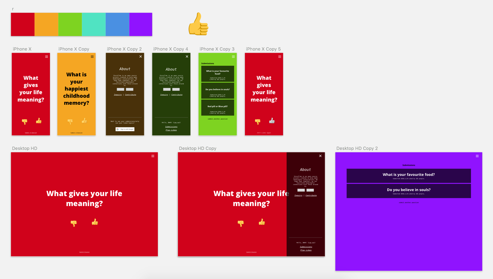
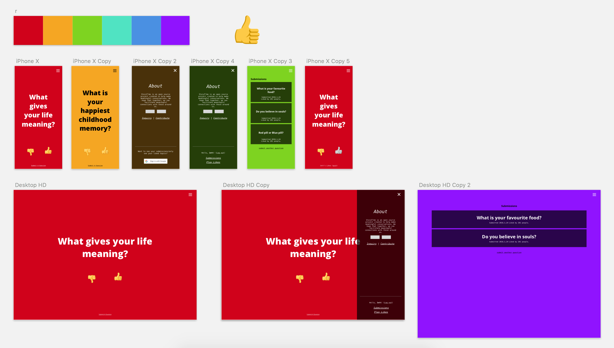

TellMeAboutYourLife.com
Tell me about your life (short tmayl), was a site I built to try and promote engaging conversation among peers. It all started at a tech event where I was partnered with a girl and had no idea what to talk to her about. I felt that although general games like 21 questions exist, it's hard for someone to think of topics that would really let you get to know someone. I allow users to like and dislike questions as well as submit their own. Built in ReactJS, connected to a firebase database and hosted on Google Cloud.
Bridgehacs
During the Summer of 2016, I was interning around Boston and wanted a way to meet other interns/developers/professionals (honestly was just a little lonely). I looked for hackathons but when I found there were none, I decided to host my own. I built the website that had a form connected to firebase for RSVPs.
I was able to get 97 attendees representing 24 different colleges, and had judges from IBM/Vistaprint as well as sponsors from companies like Twilio and DigitalOcean. I was able to get Microsoft to host my event, and the winners were able to receive some prizes too! It was a super fun event and I learned a lot about the development community around Massachussets. The event really propelled my interest in tech further than ever.
Here's a link to a gallery of pictures from the event :)

Sounditure (MIT Hacking Arts Prize Winner)
Here's a link to our winning pitch on MIT's campus
During my internship in Boston at Acadiasoft, I took part in a hackathon at MIT called MIT Hacking Arts. There, I formed a team of 5 (where I was the only developer), and built an MVP and pitched an idea for sound generated furniture. With panelists and judges from Wayfair and Spotify, I used metrics from Spotify's API to feed 3d CAD models in Autodesk.
Autodesk gave a prize to whoever utilized their API the best, and our app was chosen among dozens of other groups! My dream for the app was to glimpse at the future of machine learning in art. I envision technology creating visual representations of music that are based on actual musical characteristics (tone, energy, key, genre, etc.).